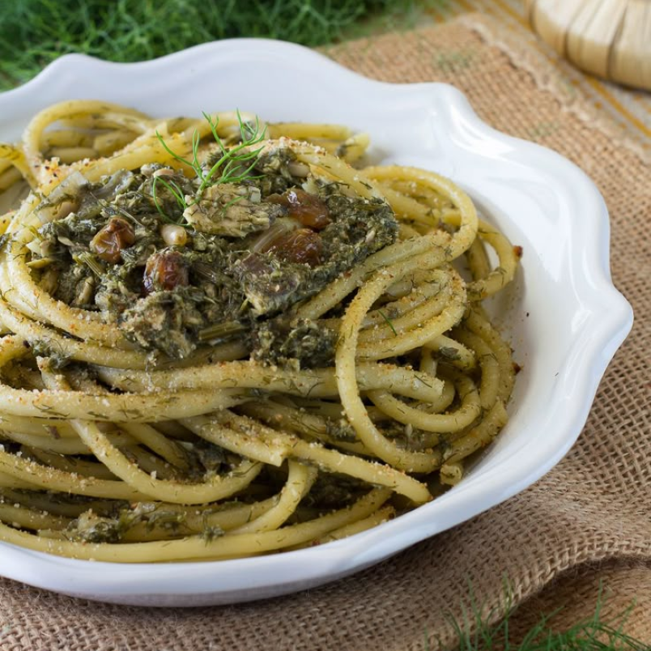

Primi piatti
Pasta alla palermitana:
- 400 grammi sarde già pulite
- 400 grammi finocchietto selvatico già pulito
- 400 grammi bucatini
- 1 cipolla bianca
- 1 cucchiaio uva passa
- 1 cucchiaio pinoli
- 5 filetti d'acciuga
- 2 cucchiai estratto di pomodoro
- olio d’oliva
- sale
- pangrattato tostato (facoltativo)

Procedimento:
- Pulite i finocchietti eliminando le parti più dure. In genere, meglio tenere la parte centrale più tenere.
- Lavate i finocchietti e lessateli in abbondate acqua salata (15 minuti circa)
- Non appena i finocchietti saranno cotti, scolateli e lasciateli intiepidire.
- Tenete da parte l’acqua di cottura che vi servirà sia per la preparazione del condimento che per la cottura della pasta
- In una padella grande, versate due giri generosi d’olio d’oliva,
- aggiungete il trito di cipolla e lasciate appassire a fiamma bassa.
- Aggiungete i filetti di acciuga e scioglieteli con l’aiuto di un cucchiaio.
- Continuate aggiungendo l’uva passa, precedentemente ammorbidita in acqua calda, e i pinoli.
- Sciogliete l’estratto di pomodoro nel soffritto aiutandovi con il dorso di un cucchiaio. Per scioglierlo diluite con l’acqua di cottura del finocchietto.
- Versate un paio di mestoli di acqua di cottura del finocchietto fino a ricoprire completamente
- Coprite con il coperchio e lasciate cuocere per 20 minuti circa.
- Quando la base sarà cotta, aggiungete le sarde e mescolate delicatamente.
- Lasciate cuocere per 2 minuti poi togliete dal fuoco. Assaggiate e regolate di sale.
- cuocete i bucatini nell’acqua dei finocchietti.
- Quando mancheranno 2-3 minuti alla fine della cottura, scolateli e trasferiteli nella padella. Mescolate per amalgamarli al condimento e aggiungete acqua di cottura.
- servitela aggiungendodel pangrattato tostato